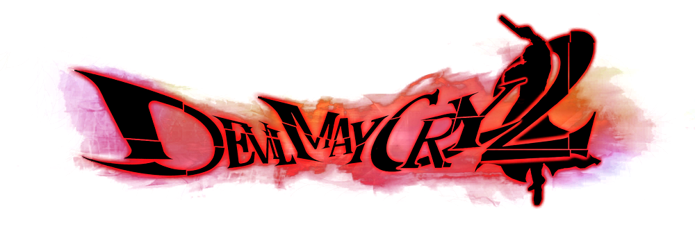

Devil May Cry 2, abreviado comúnmente como "DMC2", es la secuela del exitoso Devil May Cry de Playstation 2. Esta secuela fue lanzada también para esta consola el 25 de enero de 2003 en los EE. UU., el 30 del mismo mes en Japón, y finalmente en Europa el 28 de marzo de 2003.
Devil May Cry 2 comienza con Lucía y Dante entrando por separado en un museo donde se almacena un importante artículo llamado el Medaglia. Después de derrotar a un grupo de demonios en el museo, Lucía invita a Dante para que la siga a la isla de Dumary, donde le presenta a Matier, su madre. Matier explica que ella luchó una vez junto al padre de Dante, Sparda, para defender la isla contra los demonios. Ella le pide ayuda a Dante para luchar contra Arius, un hombre de negocios internacionales que utiliza poderes demoníacos y que intenta conquistar el mundo. Dante lanza una moneda al aire en respuesta, y decide ayudar cuando la moneda cae en cara. Después de que Dante se va, Matier y Lucía discuten sobre la Arcana, los artículos requeridos por Arius para invocar Argosax.
Lucía eventualmente confronta a Arius, quien revela que ella fue su creación. Cuando Lucía se mueve para atacar a Arius, él utiliza su magia para acabarla. Un poco después, Dante se reúne con Lucía, quien le da la última de las Arcana antes de irse. Entonces Dante encuentra Matier e intenta darle la Arcana a ella. Matier, alternadamente, le pide a Dante que tome la Arcana para salvar a Lucía, quien se había ido a luchar contra Arius de nuevo. Dante lanza su moneda al aire otra vez para decidir si les ayudará; cae en cara, y él parte para asistir a Lucía. Mientras tanto, Lucía entra en la torre de Uroboros y ataca a Arius, el cual la captura. Dante llega e intercambia la Arcana por Lucía, entonces ataca a Arius. Para escapar, Arius presiona a Dante sobre decidir entre salvar a Lucía o matarlo a él.
Lucía, preocupada acerca del ritual y estando en conflicto consigo misma, se pregunta cómo detendrán a Arius. Dante la consuela, indicando que él encontrará una manera. Dante deja a Lucía pensando mientras que él sale a la derrota de Arius. Matier llega un poco más adelante, tranquiliza la mente de Lucía, y decide reunirse a la lucha contra Arius. Dante llega para encontrar a Arius en medio de su ritual para inducirse la inmortalidad. Aparentemente no del todo satisfecho con el término de la ceremonia, Dante se muestra confiado. Otra lucha sobreviene, en la cual Dante acaba con Arius utilizando sus pistolas. Afuera, Lucía enfrenta a Dante y le exige que la mate porque teme volverse un demonio ella misma. Antes de que el desacuerdo pudiera ser resuelto, un enorme torrente de energía cae sobre la torre y un portal al mundo de los demonios se abre. Dante y Lucía discuten sobre quién entrará y lo cerrará desde el interior; Dante ofrece dejarle la opción al destino. Él lanza su moneda al aire y de nuevo cae en cara, dejando a Dante entrar al portal para lidiar con Argosax después de dejarle su moneda a Lucía.
Después de que Dante se va, Arius vuelve a la vida mostrando poderes demoníacos. Mientras que Lucía pelea contra Arius, él resulta herido e intenta distraerla, una táctica la cual falla; Lucía sigue combatiendo para derrotarlo. Dentro del portal, Dante pelea y derrota al parcialmente invocado Argosax. Descubriendo que el portal se había cerrado, Dante se adentra más en reino de los demonios montado en una motocicleta. Después de la batalla, Matier procura tranquilizar a Lucía sobre el destino de Dante, insistiendo en que Sparda regresó de un viaje similar. Lucía examina la moneda que Dante le había dejado y descubre que ambos lados son idénticos. Un tiempo después en la tienda de Dante, Lucía espera a Dante. Afuera, el sonido de una motocicleta retumba, y Lucía se va para investigar. Esto deja al jugador interpretar si es Dante o no.
Un cazademonios hijo del legendario caballero Sparda, un demonio que luchó contra el infierno para defender a los humanos de la Tierra. En sus venas corre sangre demoníaca, aunque posee un corazón humano. Dante viaja a la Isla Dumary, concretamente a Vie de Marli, donde, persiguiendo a una misteriosa mujer llamada Lucía, conoce a la madre de ésta, Matier. Esa anciana luchó junto con Sparda, el padre de Dante, años atrás. Desesperada, pide ayuda a Dante para luchar contra Arius, un ambicioso millonario que está buscando ciertos artefactos para revivir a Argosax, un ser diabólico, para proclamarse el amo y señor del mundo.
Una joven y bella mujer de cabello rojo que vive en Vie de Marli junto con su madre, Matier. Se gana la vida como guerrera y siempre ha defendido a su pueblo. Ahora se tendrá que enfrentar a su mayor reto: detener a Arius y frenar su plan para conquistar el universo liberando a Argosax. Al principio no ve con buenos ojos a Dante, pero Lucía no es una persona que de la espalda a quien quiere ayudar. A lo largo de la historia, Lucía descubrirá detalles sobre su vida y pasado que hasta el momento desconocía.
Una anciana que vive en Vie de Marli, que hace años fue una guerrera que luchó junto con Sparda, el caballero legendario y padre de Dante. Es la madre adoptiva de Lucía, a quien entrenó como guerrera para ser su sustituta en el futuro. Sabe muchas cosas de Arius, Argosax y del padre de Dante, Sparda, pero no parece que quiera compartir la información por las buenas al principio.
Multimillonario propietario de la corporación Uroboros. Su imperio está situado en la metrópolis, cerca de Vie de Marli, lugar que está en su punto de mira, ya que ahí se encuentran los artefactos que Arius busca para liberar a Argosax y así convertirse en el amo de todo el universo.
Los controles del juego son simples, convirtiendo cortas secuencias de presionar botones en complejas acciones mostradas en pantalla. Un nuevo elemento para la serie es un botón de evasión, el cual permite a Dante o Lucía rodar, esquivar ataques enemigos, o correr por las paredes. Otra nueva característica es un botón para cambiar las armas, el cual permite al jugador intercambiar armas de largo alcance sin necesidad de cambiarlas en el inventario del juego.
El juego también ofrece rompecabezas a solucionar y elementos de exploración. La jugabilidad implica que el jugador examine sus alrededores para encontrar artículos y orbes. Orbes rojos son utilizados para adquirir nuevos poderes de combate y habilidades para los personajes. Estos orbes rojos son “la sangre de los demonios”; los enemigos la dejan cuando son derrotados. En su lugar Dante y Lucía pueden también optar por comprar artículos, que permiten restaurar su salud perdida, o incluso revivir instantáneamente si mueren por el ataque de un enemigo.
La habilidad de Devil Trigger permite a Dante y a Lucía transformarse en una forma demoniaca. Esto cambia su apariencia, aumenta su fuerza y defensa, restaura lentamente su salud, y les permite utilizar ataques especiales. El estado Devil Trigger dura tanto como haya energía en la barra de D. T., la cual aumenta cuando se ataca o provoca a los enemigos mientras se está en estado normal, y disminuye mientras se ataca en estado de D. T. o usando ataques que consuman únicamente la barra de D. T. Único a este juego es el Devil Trigger de desesperación - una forma realzada del Devil Trigger - disponible para Dante cuando está bajo en salud.